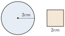
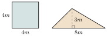

មេរៀនទី 10 វិសមភាព
- បកស្រាយចំណេះដឹងអំពីវិសមភាព
- កំណត់សញ្ញាប្រៀបធៀបនៃវិសមភាព
- ដោះស្រាយចំណោទបញ្ហាប្រចាំថ្ងៃ។
1. សញ្ញាណវិសមភាព
នៅលើបន្ទាត់ចំនួនកំណត់
យើងបានៈ
ហៅថាវិសមភាព។
ការប្រៀបធៀបចំនួនកំណត់។
- បើចំនួន \(\displaystyle a\) ធំជាងចំនួន \(\displaystyle b\) គេសរសេរ \(\displaystyle a>b\) ឬ \(\displaystyle b<a\)។
- បើចំនួន \(\displaystyle c\) តូចជាងឬស្មើចំនួន \(\displaystyle d\) គេសរសេរ \(\displaystyle c\le d\) ឬ \(\displaystyle d\ge c\)។
ចំណាំ កន្សោមលេខពីរដែលនៅសងខាងសញ្ញា
ហៅថាវិសមភាព។
ជាវិសមភាពមានទិសដៅដូចគ្នា
ជាវិសមភាពមានទិសដៅផ្ទុយគ្នា។
គេមានត្រីកោណ \(\displaystyle ABC\) ដូចរូបខាងស្តាំ។
ចូរសរសេរទំនាក់ទំនងរវាងជ្រុងនៃត្រីកោណជាវិសមភាពចំនួន \(\displaystyle 5\)។
គេបាន៖
រង្វង់មួយមានកាំ \(\displaystyle 2cm\) និងការេមួយជ្រុងប្រវែង \(\displaystyle 2cm\)។
ចូរសរសេរវិសមភាពរវាងបរិមាត្រនៃរូបទាំងពីរ។

គេបានវិសមភាព
តើកន្សោមខាងក្រោមណាខ្លះជាវិសមភាព?
2. លក្ខណៈវិសមភាព
2.1 ការបូក ដកអង្គទាំងពីរនៃវិសមភាពនឹងមួយចំនួន
ចំណាំ បើគេបូក ឬដកចំនួនតែមួយទៅលើអង្គទាំងពីរនៃវិសមភាព គេបានវិសមភាពថ្មីមានទិសដៅដូចវិសមភាពដើម។
\(\displaystyle a\) ជាចំនួនអវិជ្ជមានដែល \(\displaystyle a\ne -1\)។
ប្រៀបធៀប \(\displaystyle a+1\) និង \(\displaystyle 1\) ដោយប្រើលក្ខណៈវិសមភាព។
\(\displaystyle a\) ជាចំនួនវិជ្ជមាន។ ប្រៀបធៀប \(\displaystyle a^2+1\) និង \(\displaystyle 1\) ដោយវិសមភាព។
\(\displaystyle n\) ជាចំនួនគត់វិជ្ជមាន។ ប្រៀបធៀបប្រភាគ
ដោយវិសមភាព។
2.2 ការបូកអង្គម្ខាងទៅអង្គម្ខាងទៀតនៃវិសមភាព
គេមាន
គេបូក \(\displaystyle d-b\) លើអង្គទាំងពីរនៃវិសមភាព
ការវិសមភាព \(\displaystyle (1)\) និង \(\displaystyle (2)\) បង្ហាញថាក្នុងវិសមភាព គេអាចលើកទឹកទីនៅអង្គម្ខាងទៅអង្គម្ខាងទៀតដោយប្ដូរសញ្ញា គេបានវិសមភាពថ្មីមានទិសដៅដូចវិសមភាពដើម។
ដឹងនូវតម្លៃ \(\displaystyle a\) ក្នុងករណីនីមួយៗ រួចបំពេញសញ្ញា \(\displaystyle >\) ឬ \(\displaystyle <\) ក្នុងប្រអប់ខាងក្រោម៖
ចូរបំពេញសញ្ញា \(\displaystyle >\) ឬ \(\displaystyle <\) នៅក្នុងប្រអប់ខាងក្រោម៖
2.3 ការគុណ ចែកអង្គទាំងពីរនៃវិសមភាពនឹងមួយចំនួន
ចំណាំ បើគេគុណ ឬចែកអង្គទាំងពីរនៃវិសមភាពនឹងមួយចំនួនវិជ្ជមាន គេបានវិសមភាពថ្មីមានទិសដៅដូចវិសមភាពដើម៖
បើគេគុណ ឬចែកអង្គទាំងពីរនៃវិសមភាពនឹងមួយចំនួនអវិជ្ជមាន គេបានវិសមភាពថ្មីមានទិសដៅផ្ទុយពីវិសមភាពដើម៖
ដឹងនូវតម្លៃ \(\displaystyle a,b,c\) រួចបំពេញសញ្ញា \(\displaystyle >\) ឬ \(\displaystyle <\) ក្នុងប្រអប់ខាងក្រោម៖
បំពេញសញ្ញា \(\displaystyle >\) ឬ \(\displaystyle <\) នៅក្នុងប្រអប់ខាងក្រោម៖
3. ចំណោទ
បើគេទិញប៊ិច \(\displaystyle 5\) ដើមមានតម្លៃ \(\displaystyle a\) រៀលក្នុងមួយដើម រួមជាមួយប្រអប់ដែលមានតម្លៃ \(\displaystyle b\) រៀល នោះតើចំណាយទាំងអស់យ៉ាងច្រើន \(\displaystyle 10000\) រៀល។ សរសេរទំនាក់ទំនងនៃប្រាក់ចំណាយជាវិសមភាព។
គេមានប៊ិច \(\displaystyle 1\) ដើម ថ្លៃ \(\displaystyle a\) រៀល នោះប៊ិច \(\displaystyle 5\) ដើមថ្លៃ \(\displaystyle 5a\) រៀល។
ប្រអប់ \(\displaystyle 1\) ថ្លៃ \(\displaystyle b\) រៀល ហើយចំណាយទាំងអស់យ៉ាងច្រើន \(\displaystyle 10000\) រៀល។
គេបានទំនាក់ទំនងជាវិសមភាពគឺ
សួនផ្កាមួយមានការេ និងសួនផ្កាមួយមានត្រីកោណ ដូចរូបខាងស្តាំ។ រកផ្ទៃក្រឡាសួនទាំងពីរ រួចប្រៀបធៀប។

ផ្ទៃក្រឡាការេ
ផ្ទៃក្រឡាត្រីកោណ
ដូចនេះ
ឬ ផ្ទៃក្រឡា
ផលបូកជ្រុងពីរនៃត្រីកោណមួយធំជាងជ្រុងទីបី \(\displaystyle (\text{ដូចរូបខាងស្តាំ})\)។
គេបាន
សរសេរទំនាក់ទំនងរវាងបរិមាណខាងក្រោមដោយប្រើសញ្ញាវិសមភាព។
បើគេគុណចំនួន \(\displaystyle x\) និង \(\displaystyle 2\) លើមួយចំនួន \(\displaystyle 5\) គេនោះលទ្ធផលធំជាង \(\displaystyle 10\)។
លំហាត់
ជ្រើសរើសវិសមភាពក្នុងសំណុំខាងក្រោម៖
\[-2<-1,\quad 8>5,\quad a=b,\quad c<d,\quad a+c<a+d,\quad a+c=a+d\]បំពេញសញ្ញា \(\displaystyle >\) ឬ \(\displaystyle <\) ឬ \(\displaystyle =\) នៅក្នុងប្រអប់ខាងក្រោម៖
\[\begin{array}{ll} \text{ក. } 10<20 \text{ នោះ } 10-4 \ \Box\ 20-4\\[4pt] \text{ខ. } a<b \text{ នោះ } a-c \ \Box\ b-c\\[4pt] \text{គ. } a>b \text{ នោះ } a-c \ \Box\ b-c\\[4pt] \text{ឃ. } 1<12 \text{ នោះ } 1\div4 \ \Box\ 12\div4\\[4pt] \text{ង. } -20<-2 \text{ នោះ } -20\div(-4) \ \Box\ -2\div(-4)\\[4pt] \text{ច. } a<b \text{ នោះ } a\div c \ \Box\ b\div c \quad \text{ចំពោះ } c>0\\[4pt] \text{ឆ. } a>b \text{ នោះ } a\div c \ \Box\ b\div c \quad \text{ចំពោះ } c<0\\[4pt] \text{ជ. } 2\times38\times5 \ \Box\ 360\\[4pt] \text{ឈ. } 170+40\div8\times2 \ \Box\ 190\\[4pt] \text{ញ. } 25\times19+25\times21 \ \Box\ 1000។ \end{array}\]- បង្ហាញថាបើ \(\displaystyle a>b\) និង \(\displaystyle c>d\) នាំឱ្យ \(\displaystyle a+c>b+d\) រួចឱ្យឧទាហរណ៍ដោយលេខបញ្ជាក់។
- បង្ហាញថាបើ \(\displaystyle a>b\) និង \(\displaystyle c<d\) នាំឱ្យ \(\displaystyle a-c>b-d\) រួចឱ្យឧទាហរណ៍ដោយលេខបញ្ជាក់។
- បង្ហាញថាបើ \(\displaystyle a>b\) និង \(\displaystyle b>c\) នាំឱ្យ \(\displaystyle a>c\) រួចឱ្យឧទាហរណ៍ដោយលេខបញ្ជាក់។
ប្រៀបធៀបចំនួន
\[\text{ក. } \frac{5}{3} \text{ និង } \frac{7}{3} \qquad \text{ខ. } \frac{2}{3} \text{ និង } \frac{17}{27}\]\[\text{គ. } \frac{14}{11} \text{ និង } \frac{7}{5} \qquad \text{ឃ. } \frac{55}{23} \text{ និង } \frac{17}{11}\]- គេចង់ធ្វើដំណើរពីក្រុង \(\displaystyle A\) ទៅក្រុង \(\displaystyle B\) ដែលស្ថិតនៅចម្ងាយ \(\displaystyle 18km\) ពីគ្នា។ ដំបូងគាត់ដើរដោយល្បឿន \(\displaystyle 5km/h\) បន្ទាប់មក \(\displaystyle 4km/h\)។ បើការធ្វើដំណើរចំណាយពេលអស់ \(\displaystyle 4h\)។ ចូរសរសេរទំនាក់ទំនងដោយប្រើសញ្ញាវិសមភាព។
\(\displaystyle a=10,\quad b=-1\) ផ្ទៀងផ្ទាត់ថា
\[|a+b|\le |a|+|b|។\]
ខ្លឹមសារ៖ សៀវភៅពុម្ពគណិតវិទ្យាថ្នាក់ទី៧ របស់ក្រសួងអប់រំ យុវជន និងកីឡា · វាយអត្ថបទ គូររូបភាពឡើងវិញ និងរៀបចំលើអនឡាញដោយលោកគ្រូ សាន សុខលី សម្រាប់ការសិក្សាដោយឥតគិតថ្លៃ និងមិនរកប្រាក់ចំណេញ។ មិនមែនជាការបោះពុម្ពផ្លូវការរបស់ក្រសួងទេ។